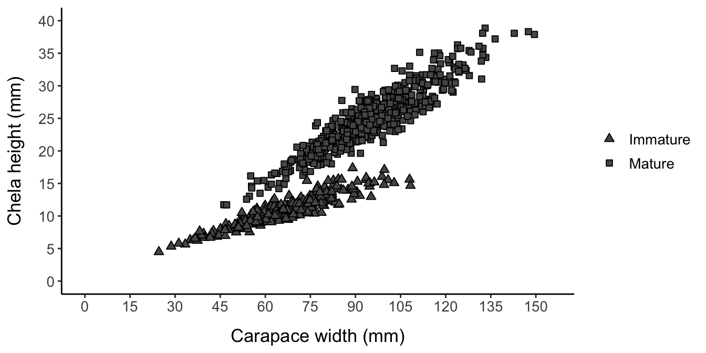
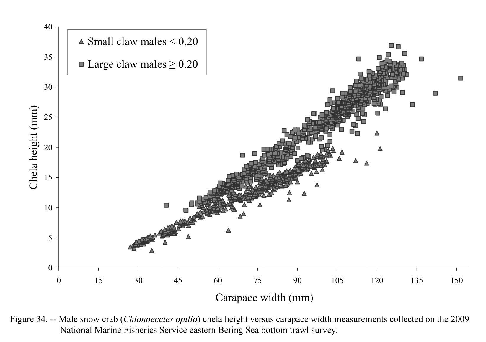
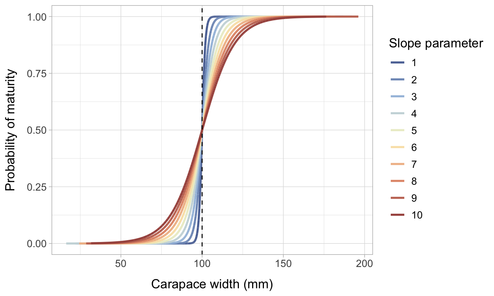
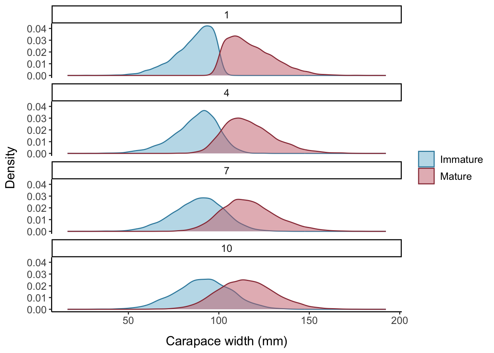
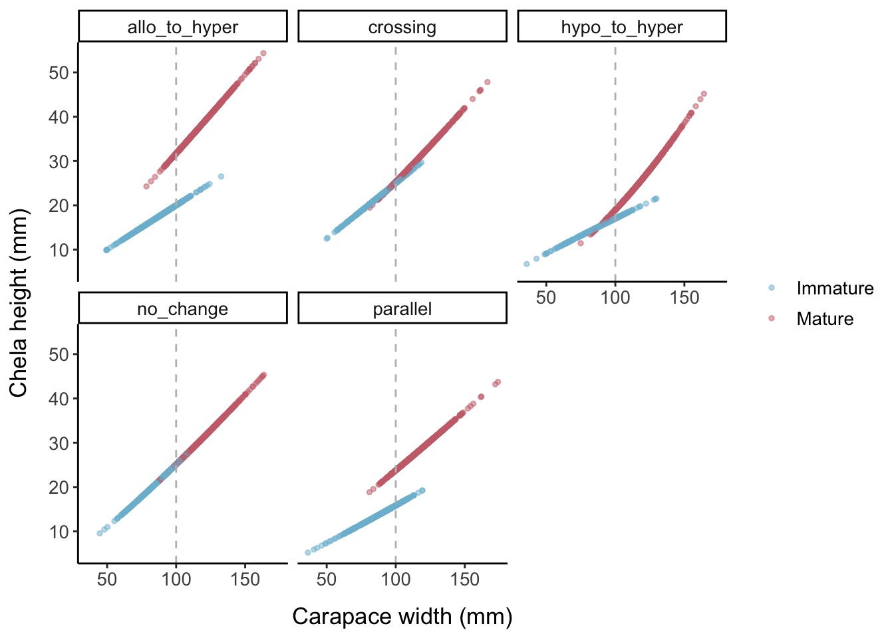
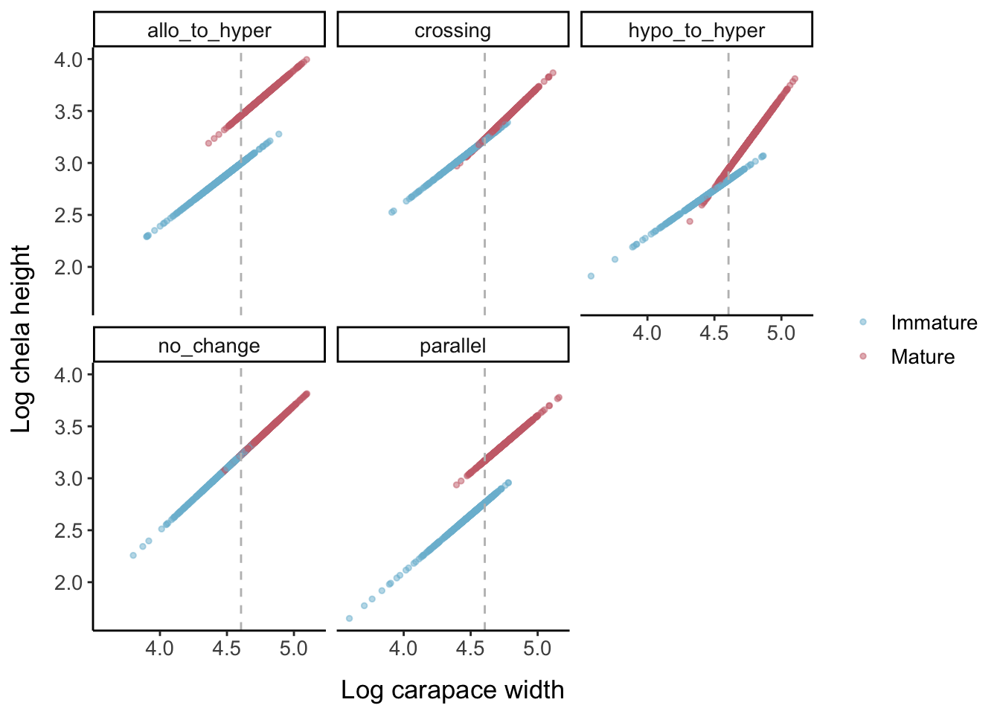
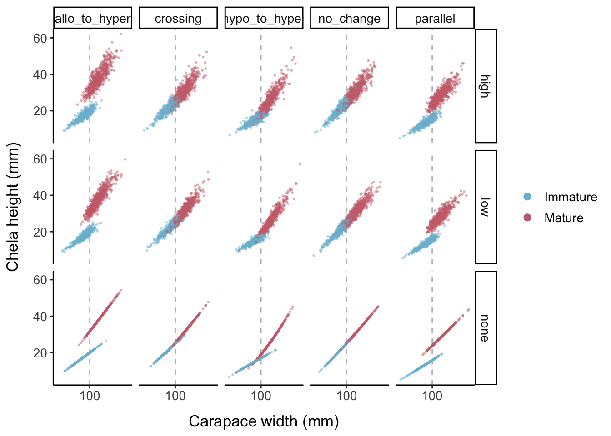
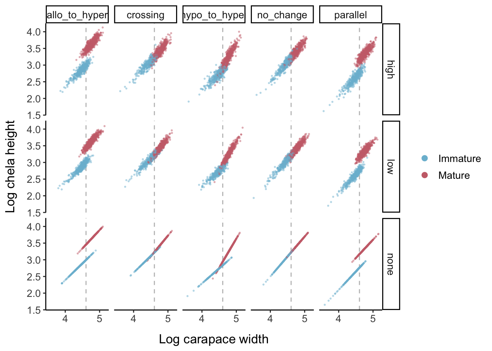
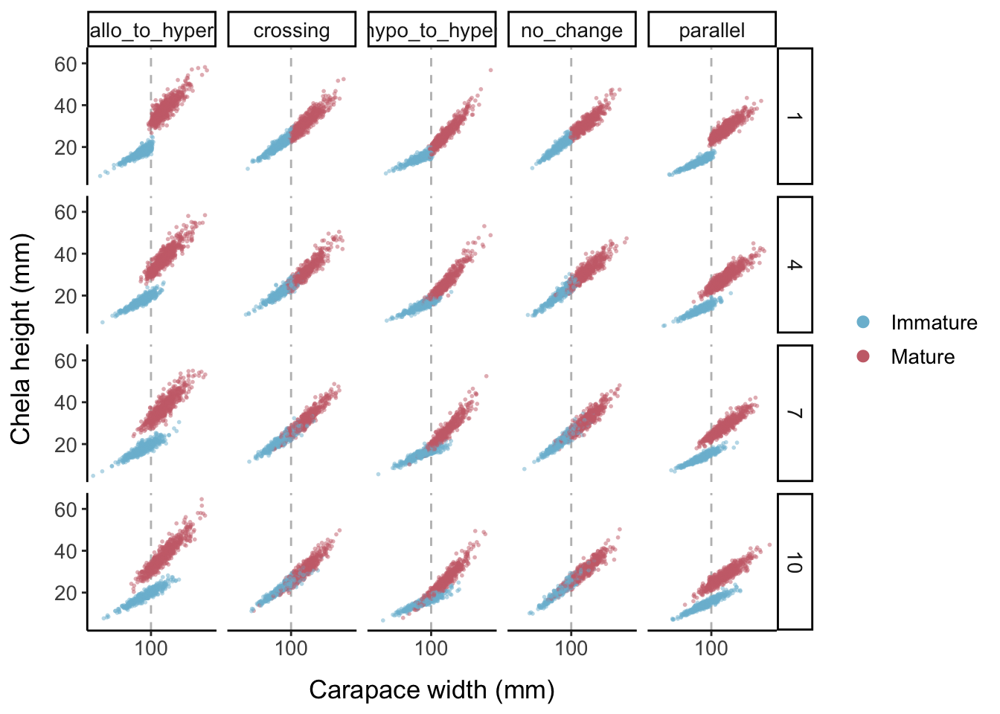
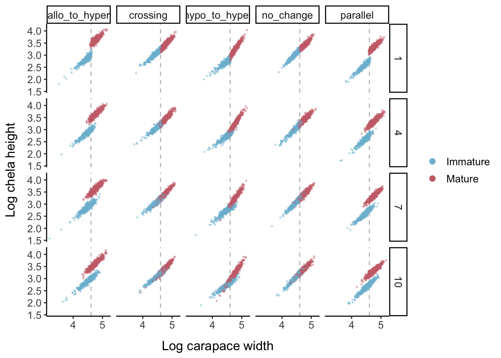

7 Planned Simulations
Now, we will use different combinations of logistic and allometric parameters to determine how the model approach performs given varying possibilities for the true underlying biological process. We will also include several possibilities for the amount of noise present in the data by changing the magnitude of both types errors. The collection of parameter sets will include some extreme combinations that represent challenging or “adversarial” data sets. Such simulations help determine the domain of applicability by assessing model performance across a range of biologically realistic data sets that capture the variation and imperfection found in empirical data (Lotterhos, Fitzpatrick, and Blackmon 2022).
7.1 Initial comparison - all models
I will first test all methods on “nice” data, which will be 100 randomly generated data sets with the same parametrization, designed to roughly mimic a real-world data set: Figure 34 from (Chilton, Armistead, and Foy 2011), which plots carapace width vs. chela height for 1,353 snow crabs (Chionoecetes opilio) collected in 2009 from the Eastern Bering Sea.

A similar data set can be recreated by:
- Setting the L50 parameter to the 75 mm value referenced in the report
- Reducing the mean carapace width to 85 mm
- Choosing a relatively high logistic slope parameter (9) to create high overlap between the mature and immature clouds
- Setting a moderate error level (scale parameter = 17)
- Choose allometric parameters such that the slope increases at maturity (from 0.9 to 1.06) but the intercept decreases (from 0.25 to 0.2), so that the lines will intersect
For the regression methods that accept or require upper and lower bounds for the possible SM50 value, combinations of quantiles representing the upper and lower bounds will be tested, with each combination tested on each of the original 100 randomly generated data sets to determine how slight changes in the data might affect where the upper and lower bounds should be set. For regression methods that accept possible numbers of breakpoints, I will test breakpoint values from 10 to 1000 in increments of 10.
For clustering methods, I will test every combination of distance metric, agglomeration method, or k-means algorithm accepted by the given clustering function. Finally, all of the above procedures will be repeated on log-transformed data, standardized (scaled and centered) data, and, where possible for the method, transformed using PCA.
7.2 Comparison on different data sets
I will choose the best-performing representative (highest % accuracy for clustering methods before regression, lowest MAE) from each general modeling approach to move on to a second round of simulation testing. If not already included, very popular methods (namely, segmented, regrans, and Somerton’s method) will also be included in the second round of testing. The second round of simulation testing will include changing the location of SM50 within the range of the data, the logistic slope parameter, the allometric growth parameters, and the level of error/noise in the data.
7.2.1 Logistic slope parameter
The slope of the logistic distribution becomes less steep with higher values of \(a\). The lower values are representative of a species where there is very little intraspecific variation in size at maturity; if the true L50 is 100 mm, almost all individuals will become mature close to 100 mm. In contrast, the high parameters represent a species where there is significant variation in L50 between individuals.

Another way of visualizing the impact of changing the slope parameter \((a)\) is by comparing density plots of maturity by CW. Figure 7.2 illustrates how the area of intersection between the immature and mature curves increases with increasing values of \(a\). The right tail of the immature distribution extends to much higher CW values when \(a=10\) compared to when \(a=1\), while the left tail of the mature distribution extends much lower.

The slope of the logistic curve (the sharpness of the transition to maturity), the allometric slope and intercept, and the magnitude of the error in the data. Instead of leaving the slope parameter at 5, we will try values from 1 to 10. Values above 10 were initially tested, but the degree of overlap between the mature and immature groups was far beyond what is likely to be observed in nature. We will test five different options for how allometric growth changes upon reaching maturity, including the default of no change. We will test three options for the magnitude of the errors. The three options will be a normal distribution with an extremely small SD (essentially no error), a SD equal to 1/20 the range of the x-axis variable, or a SD of 1/15 the range of the x-axis variable. Then, we create data frame with all possible combinations of these parameters and create a simulated data set for each combination.


Now we add data points for the three different error levels:


Keeping the error levels low, here is what each allometric parameter set looks like when the logistic slope parameter is changed:


For any remaining regression methods that accept or require upper and lower bounds for the possible SM50 value, I will again test combinations of quartiles representing the upper and lower bounds. This time, the testing will be done for the original parametrization of the data as well as 20 data sets where SM50 is much closer to the low end of the range of x-values and 20 data sets where SM50 is near the higher end of the x values in the data set.
7.3 Testing sampling bias
Simulation studies can serve as a powerful tool to assess the effects of sampling strategies, sample size, and sampling bias on the output of an ecological model (Meynard, Leroy, and Kaplan 2019; Lotterhos, Fitzpatrick, and Blackmon 2022). For parameter combinations where the model is effective, I will conduct a final round of simulation testing evaluating model performance on different sample sizes and size class representations. This will entail testing each model on 100 data sets for each sample size and 100 data sets for each size class representation (subsample 50% juvenile-50% adult, 75% juvenile-25% adult, 25% juvenile-75% adult).
References
Chilton, Elizabeth Ann, Claire E. Armistead, and Robert James Foy. 2011. “The 2010 Eastern Bering Sea Continental Shelf Bottom Trawl Survey: Results for Commercial Crab Species.” Edited by Alaska Fisheries Science Center (U.S.), NOAA technical memorandum NMFS-AFSC-216,. https://repository.library.noaa.gov/view/noaa/3776.
Lotterhos, Katie E., Matthew C. Fitzpatrick, and Heath Blackmon. 2022. “Simulation Tests of Methods in Evolution, Ecology, and Systematics: Pitfalls, Progress, and Principles.” Annual Review of Ecology, Evolution, and Systematics 53 (1): 113–36. https://doi.org/10.1146/annurev-ecolsys-102320-093722.
Meynard, Christine N., Boris Leroy, and David M. Kaplan. 2019. “Testing Methods in Species Distribution Modelling Using Virtual Species: What Have We Learnt and What Are We Missing?” Ecography 42 (12): 2021–36. https://doi.org/10.1111/ecog.04385.